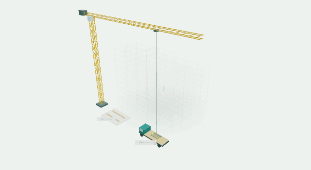
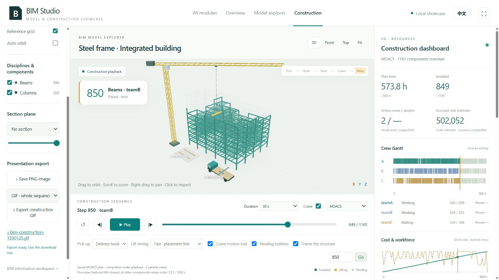
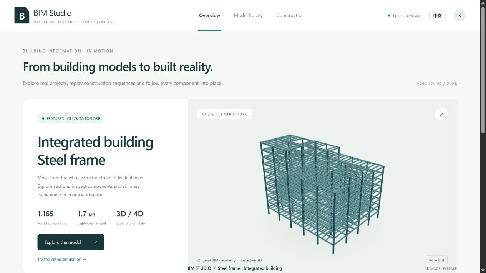
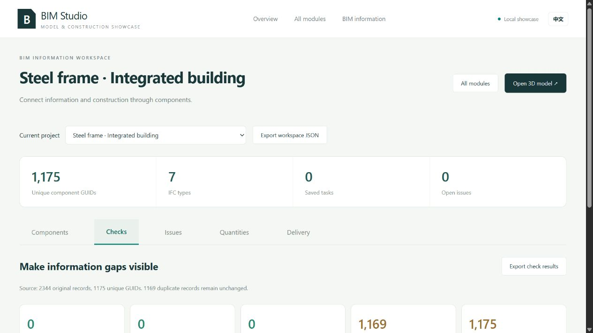

BIM construction management platformBIM 建造管理平台
From IFC models to 3D/4D construction replay
从 IFC 模型到三维 / 4D 施工回放
A web platform that turns IFC building models into a searchable component database and links them to cost, equipment, documents and construction progress. Built as a team bachelor’s thesis project at Tongji University (advisor: Prof. Jie Wu) and later extended with a 3D/4D workspace that replays the MOACS steel-frame schedule with a tower crane.
一个 Web 平台：把 IFC 建筑模型解析成可检索的构件数据库，并与成本、设备、资料和施工进度关联。作为同济大学本科毕业设计团队项目完成（导师：吴杰），之后又扩展了三维 / 4D 工作台，用塔吊回放 MOACS 钢框架施工方案。
Role:个人贡献： IFC parsing, database design and the cost, equipment and document modules.IFC 解析、数据库设计，以及成本、设备与资料模块。

Overview概览
IFC parsingIFC 解析
Geometric location and material information of each component is extracted from the IFC file.
从 IFC 文件中提取每个构件的几何位置与材料信息。
Graph + document storage图数据库 + 文档数据库
Neo4j stores projects, components, property sets and their relationships; MongoDB holds project files and accounts.
Neo4j 存储项目、构件、属性集及其关系；MongoDB 存放项目文件与账号。
Management modules管理模块
Cost, equipment, document, contract and progress modules built with HTML, CSS and JavaScript.
用 HTML、CSS 与 JavaScript 开发成本、设备、资料、合同与进度模块。
Construction replay施工回放
The construction view replays the saved schedule member by member, with crew Gantt charts, installed counts and cost over time.
施工视图逐构件回放保存的施工方案，并显示班组甘特图、已安装数量与费用随时间的变化。

Models and component information模型与构件信息
Every component keeps its IFC identity, so the model, its properties and the project records stay linked.
每个构件保留其 IFC 身份，使模型、属性与项目记录始终关联。

